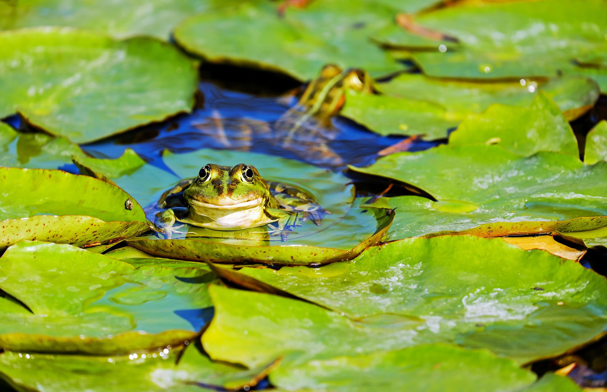
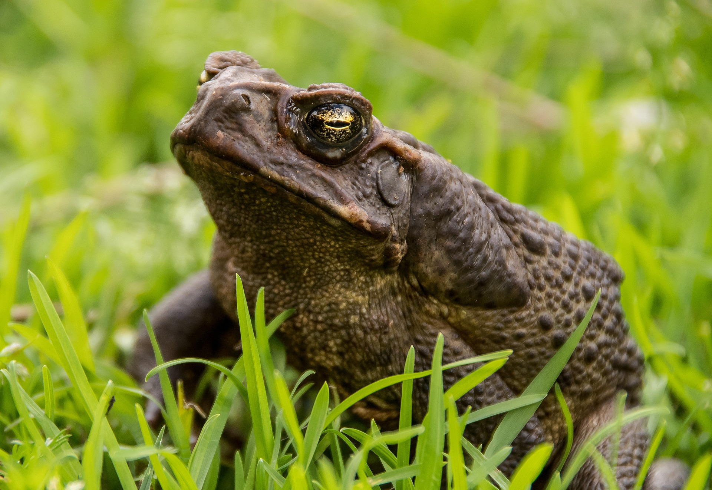
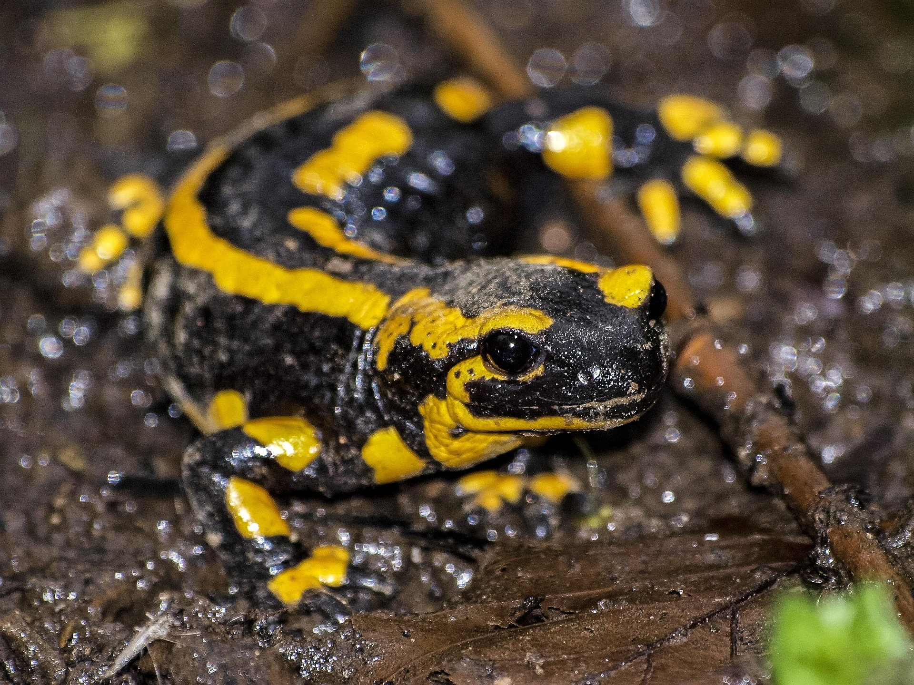
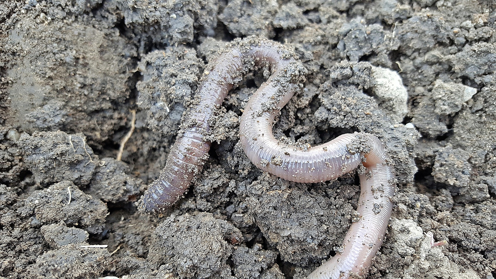

El h bitat natural del ajolote (Ambystoma mexicanum) se limita exclusivamente al sistema lacustre de Xochimilco, cerca de la Ciudad de M xico. Prefieren aguas tranquilas (l nticas), fr as, poco profundas y con abundante vegetaci n acu tica. Lamentablemente, su entorno est en peligro cr tico por contaminaci n y especies invasoras.
CARACTERISTICAS
- Apariencia y F sico:
Tienen una cabeza ancha, ojos peque os sin p rpados, cuatro patas peque as y una cola larga aplanada. Poseen branquias externas plumosas, generalmente rosadas, que salen a los lados de su cabeza.- Coloraci n:
En estado salvaje, suelen ser caf s, negros o verde oliva moteado para camuflarse. En cautiverio, son comunes las variedades leuc sticas (blancos/rosados) y albinas.- Alimentaci n:
Son carn voros y nocturnos. Se alimentan de peque os peces, larvas, crust ceos y gusanos, succionando a sus presas.- Regeneraci n:
Tienen una extraordinaria capacidad para regenerar partes del cuerpo, incluyendo el cerebro, coraz n y extremidades sin dejar cicatrices.- Conservaci n:
Se encuentran en peligro cr tico de extinci n debido a la p rdida de h bitat, contaminaci n y especies introducidas en Xochimilco

Las ranas habitan principalmente en lugares h medos y cercanos al agua dulce, como r os, lagunas, pantanos, humedales y charcos, necesarios para su reproducci n y respiraci n cut nea. Aunque prefieren climas tropicales y subtropicales, se encuentran en todo el mundo (excepto la Ant rtida), adapt ndose a bosques, desiertos e incluso zonas urbanas
CARACTERISTICAS
- Metamorfosis:
Comienzan su vida como renacuajos acu ticos con branquias y cola, transform ndose en adultos terrestres o semiacu ticos sin cola y con pulmones.- Piel permeable:
Tienen la piel fina y h meda, que utilizan para respirar (respiraci n cut nea) y absorber agua, necesitando ambientes h medos para sobrevivir.- Alimentaci n carnivora:
Son depredadores, consumiendo insectos, ara as y peque os invertebrados, atrap ndolos con su lengua protr ctil y pegajosa.- Locomoci n por saltos:
Sus extremidades posteriores son mucho m s largas y fuertes que las delanteras, adaptadas para saltar grandes distancias.- Reproducci n y croar:
Son animales ov paros que ponen huevos en el agua. Los machos poseen sacos vocales para emitir un sonido caracter stico, conocido como croar, para atraer parejas.

Los sapos son principalmente terrestres y nocturnos, habitando una gran variedad de ecosistemas h medos y secos como bosques,praderas, desiertos, zonas agr colas y jardines. Aunque viven en tierra, requieren cuerpos de agua estancada o de lento movimiento (charcas, r os, embalses) para reproducirse y poner sus huevos.
CARACTERISTICAS
- Piel seca y verrugosa:
A diferencia de la piel lisa y h meda de las ranas, los sapos tienen una piel gruesa, seca y llena de bultos o protuberancias.- Gl ndulas de veneno (Parotoides):
Detr s de sus ojos poseen gl ndulas que segregan una sustancia t xica (veneno) para defenderse de los depredadores.- H bitos mayoritariamente terrestres:
Aunque necesitan agua para reproducirse, los sapos viven m s tiempo en tierra, escondi ndose bajo rocas o tierra durante el d a.- Movimiento lento:
Tienen patas traseras m s cortas en comparaci n con las ranas, lo que los lleva a caminar o dar saltos cortos en lugar de grandes saltos.- Reproducci n y metamorfosis:
Ponen huevos en forma de largas cadenas gelatinosas en el agua, que luego se convierten en renacuajos antes de transformarse en sapos adultos.

La salamandra habita principalmente en zonas boscosas, h medas y sombr as del hemisferio norte, especialmente cerca de arroyos limpios, estanques o r os. Pasa la mayor parte del tiempo bajo troncos, piedras o hojarasca, siendo animales nocturnos que buscan ambientes fr os y con alto contenido de agua.
CARACTERISTICAS
- Regeneraci n de miembros:
Tienen una extraordinaria capacidad para regenerar extremidades perdidas, cola e incluso rganos internos.y llena de bultos o protuberancias.- Piel h meda y respiraci n cut nea:
Carecen de escamas y su piel debe mantenerse h meda, respirando a trav s de ella y, en muchos casos, tambi n a trav s de pulmones rudimentarios.- Colores aposem ticos (venenosas):
Suelen tener colores llamativos (negro y amarillo o naranja) que advierten de la presencia de toxinas en su piel, utilizadas como defensa.- Reproducci n y ciclo de vida:
Muchas especies son ovoviv paras (los huevos se desarrollan dentro de la madre) y la mayor a atraviesa un estado larvario acu tico antes de la metamorfosis a adultos terrestres.saltos cortos en lugar de grandes saltos.- H bitos nocturnos y dependencia de la humedad:
Son animales activos de noche o en d as lluviosos, escondi ndose bajo troncos o rocas para evitar la desecaci n.

Las cecilias (Gymnophiona) son anfibios principalmente fosoriales (excavadores) que habitan suelos h medos, hojarasca y zonas cercanas a cuerpos de agua en regiones tropicales y neotropicales de Am rica, frica y el sudeste asi tico. Prefieren entornos oscuros, bosques h medos, plantaciones y zonas sombreadas para mantener la humedad de su piel.
CARACTERISTICAS
- Cuerpo sin extremidades ( podos):
Son anfibios alargados que carecen por completo de patas, lo que les da una apariencia similar a lombrices de tierra o peque as culebras.- Segmentaci n anular:
Su cuerpo est marcado por surcos anulares (anillos) que los dividen, y a menudo presentan escamas d rmicas ocultas en la piel, una caracter stica nica entre los anfibios modernos.- Adaptaci n a la excavaci n (Fosaoriales):
Poseen un cr neo compacto, duro y puntiagudo que les permite enterrarse con fuerza en lodo o tierra h meda.- Tent culos sensoriales:
Presentan un par de tent culos retr ctiles entre los ojos y la fosa nasal que utilizan para detectar olores y vibraciones, cruciales para su vida subterr nea y para la caza.- Ojos reducidos y ceguera:
Sus ojos son sumamente peque os y, en muchas especies, est n cubiertos por piel o hueso, limitando su visi n a la detecci n de luz y oscuridad.